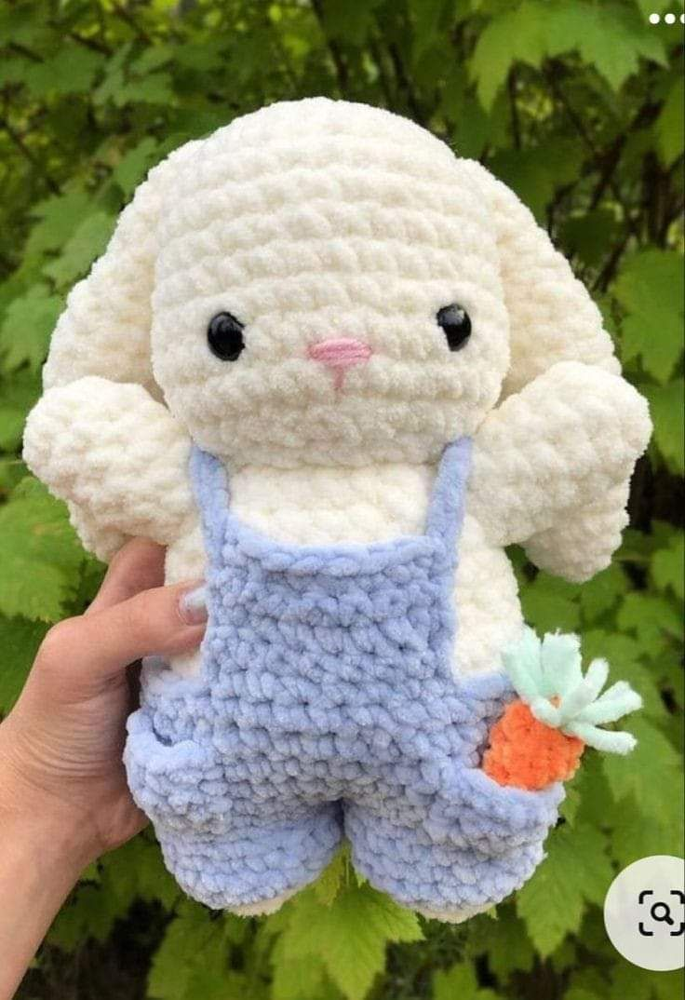

Behind the stitches
Hello there!
Welcome to my little corner of the internet! Little Loops is a space for my love of crochet, the joy of making things by hand, and the inspiration behind each creation.
I want this portfolio to be more than a collection of photos. Each project has its own page where you can discover its details and, once I add the original tutorial, try making something of your own.
Meet my creations →